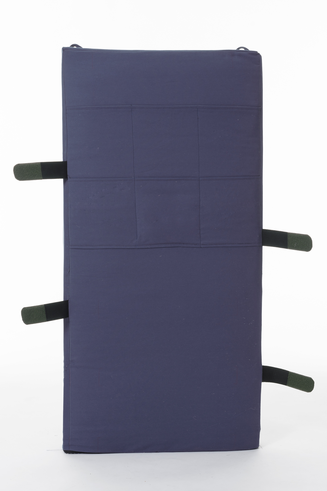
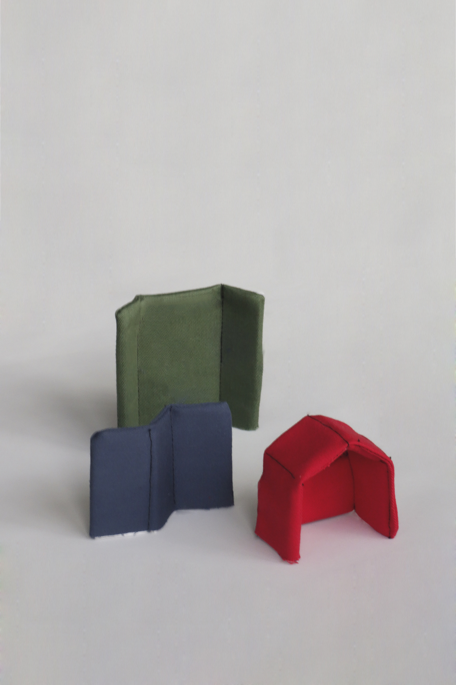
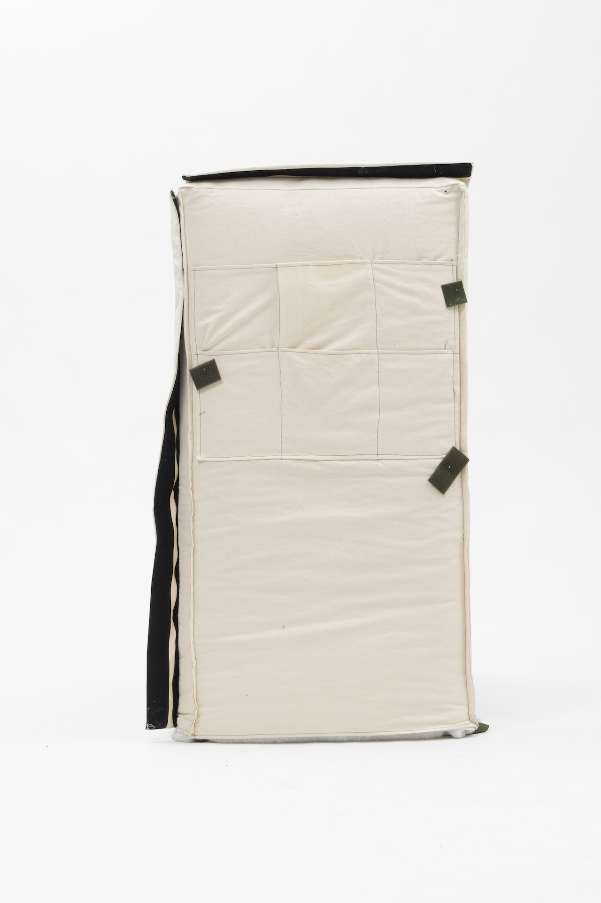

<!DOCTYPE html>
<html>
</html>

<head>
  <meta charset="UTF-8">
  <title>Juliette Collin</title>
  <meta name="viewport" content="width=device-width, initial-scale=1">
  <link rel="stylesheet" href="juliettecollin-projetsS9.css">

</head>

<body>
<section class="content-container ">

  <div class="content-orange">

        <div class="header">Juliette Collin © 2020</div>

        <a href="juliettecollin-projetsS9.html" class="retour">Retour</a>
        <a href="#abri" class="texte-projet">Cabanes<br>
            <em>2018-19</em><br>
            Le projet Cabanes est une gamme de parois acoustiques destinée aux crèches de la Mairie de Paris. Pensée comme un jeu de construction, les différentes configurations correspondent aux différents besoins de la crèche : rencontrer un parent, séparer les espaces lors d’un repas ou s’isoler pour lire un livre. Elles donnent une dimension ludique et pratique à cet objet afin de l’intégrer dans l’environnement de la crèche.<br>
          </a>
        </div>

  <div class="content-violet">

    <div class="flex-container-projet">
      <div>
                  
      </div>

      <div>
        
      </div>

      <div>
        
      </div>
      <div>
        
      </div>

      <div>
        
      </div>
<div>
        
      </div>  
      <div>
        
      </div>
      <div>
        
      </div>
      

     
    


    </div>        

  </div>
</section>    

</body>

